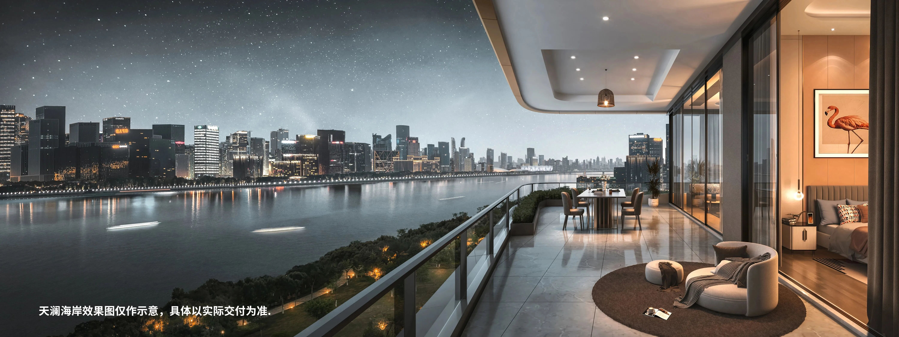
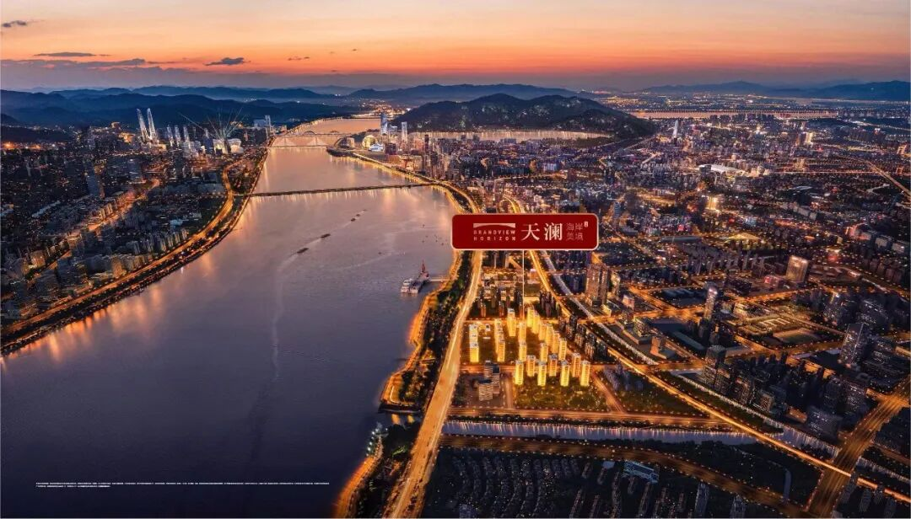
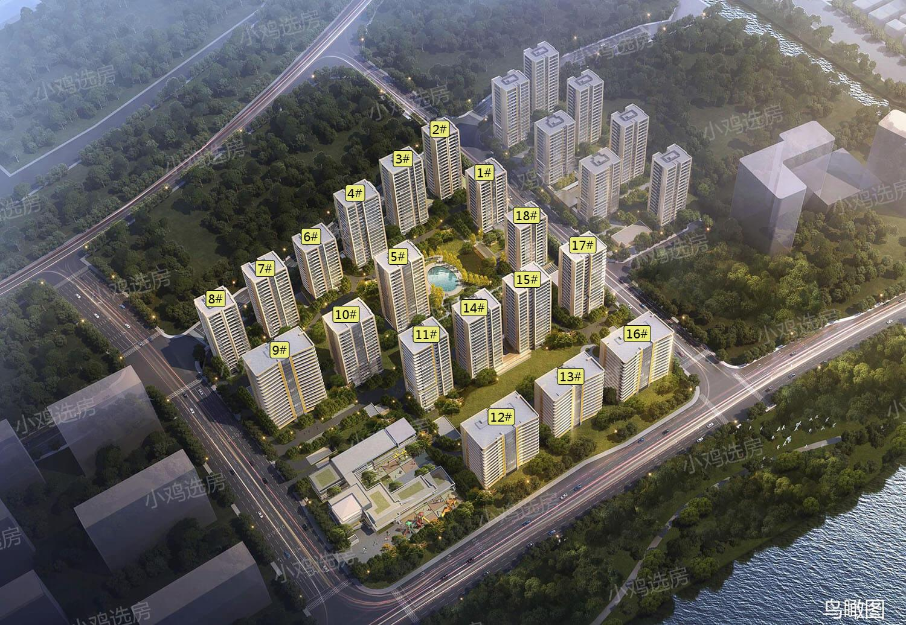
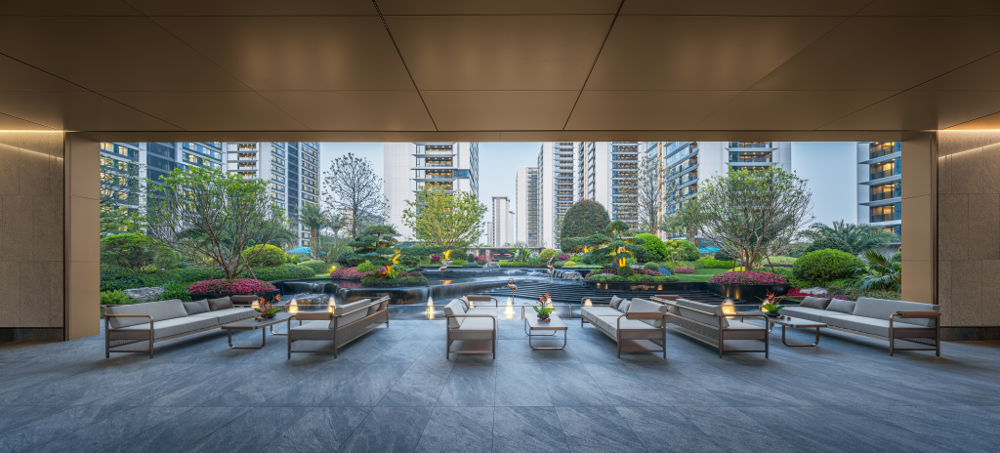
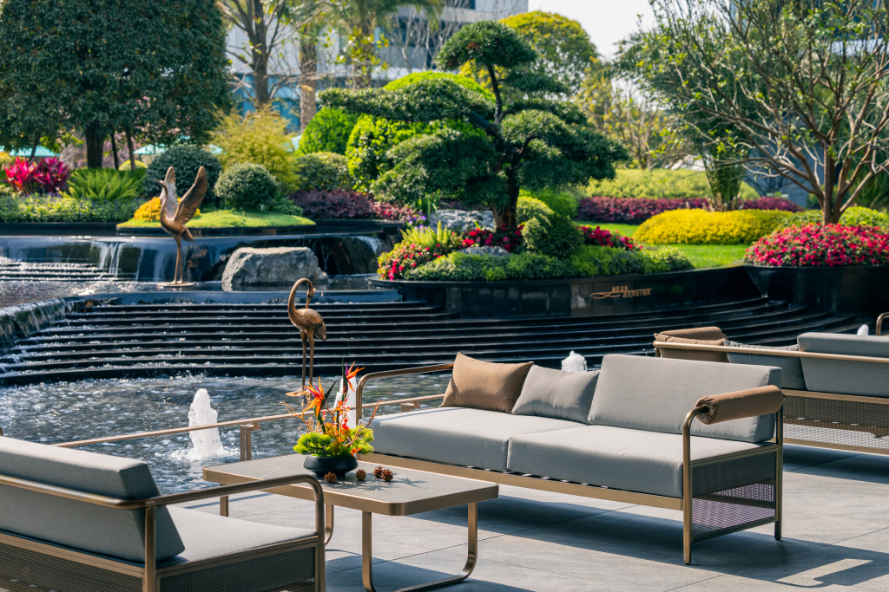
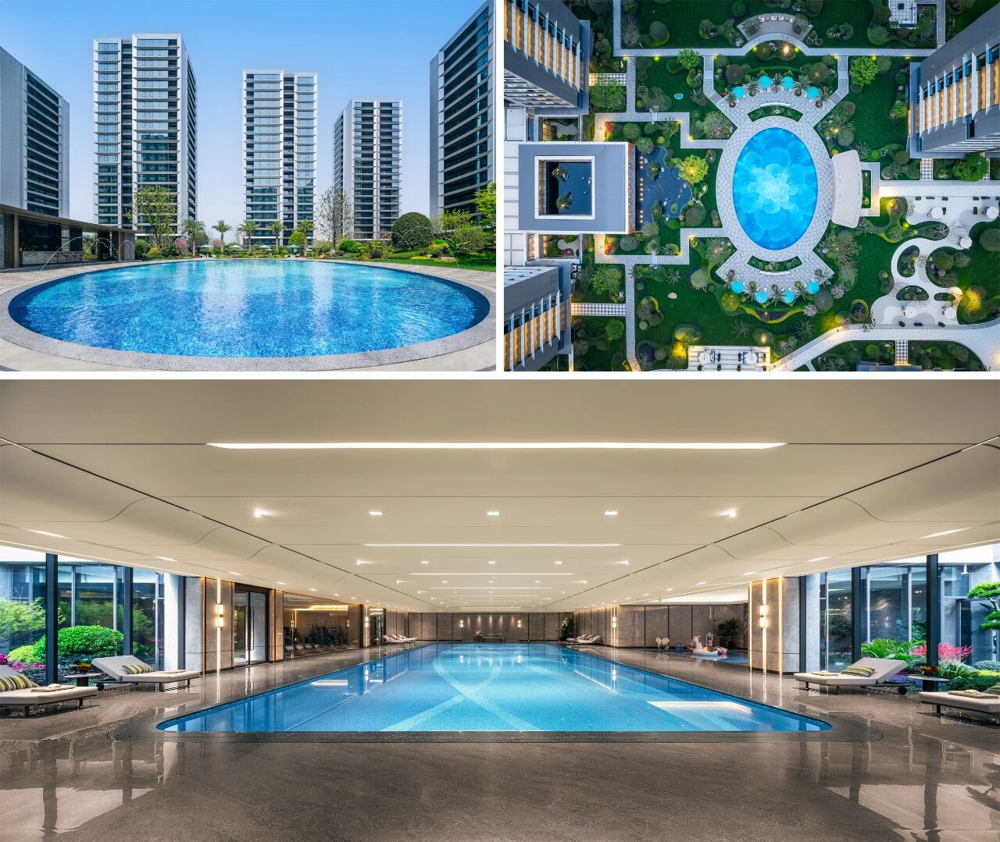
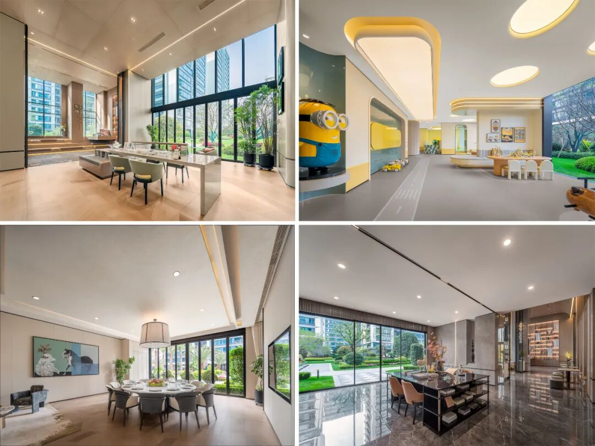
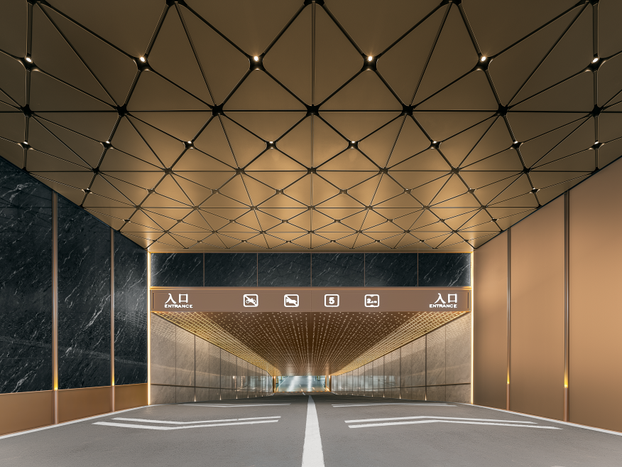
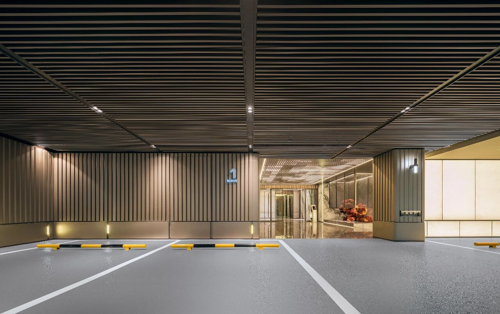
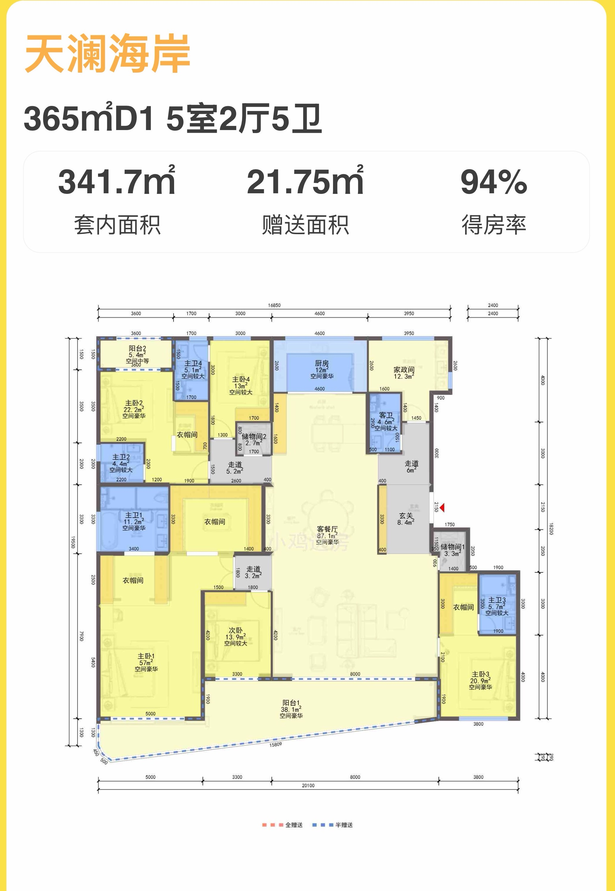

TIANLAN COAST · COMMUNITY
江岸之上
完整的改善生活
从城市滨水界面，到建筑、园林与日常归家体验，完整了解天澜海岸。
QIANJIANG NEW CITY 2.0
择址城市江岸
面向钱塘江展开
天澜海岸位于杭州上城区钱江新城二期滨水板块，社区南向面向之江东路与钱塘江，建筑、园林和公共空间共同形成城市江岸居住界面。
一线临江带来的价值不只是视野，也体现在采光、通风、城市界面和长期居住感受。

THE RESIDENCE LOCATION
13栋中高楼层
居于一线江景中间位置
本房源位于社区南侧一线临江楼幢的中间位置。相较两侧楼幢，13栋正面承接江景界面，中高楼层兼顾观景尺度、采光与日常居住感受。

楼幢位置根据公开鸟瞰资料标注，具体边界与视线关系以现场实际为准。
ARCHITECTURE
建筑立面与社区实景
临江楼幢以横向线条和弧面元素形成辨识度；社区内部通过园林、泳池和建筑界面共同构成连续的居住场景。
LANDSCAPE
园林水系
不止用于观看
社区以水景、层次绿化、休憩平台和步行动线组织园林空间。可停留、可交流、可使用的场景，让园林成为日常生活的一部分。


SHARED AMENITIES
社区公区与生活场景
室内外泳池、架空层和多功能公区，共同补充大户型家庭在住宅之外的休闲、亲子与会客需求。


ARRIVAL EXPERIENCE
归家体验
延伸至地下空间
地库入口、停车区域与归家大堂采用统一的材质与照明语言，让从车辆进入社区到抵达单元的过程保持完整。


365㎡ REFERENCE FLOOR PLAN
约365㎡同面积段户型解析
5房2厅5卫，配置中西双厨，南北通透、三阳台设计；约16米超长南向阳台延展家庭活动空间，主卧双衣帽间与双储藏室强化收纳能力。

该图为项目同面积段参考户型，具体以本套房屋实际格局、产权资料及现场展示为准。
368㎡ RIVER VIEW RESIDENCE
社区价值之外
回到这套一线江景住宅
约368㎡、南向看江、精装未入住，双产权车位。
查看房源并预约带看 →